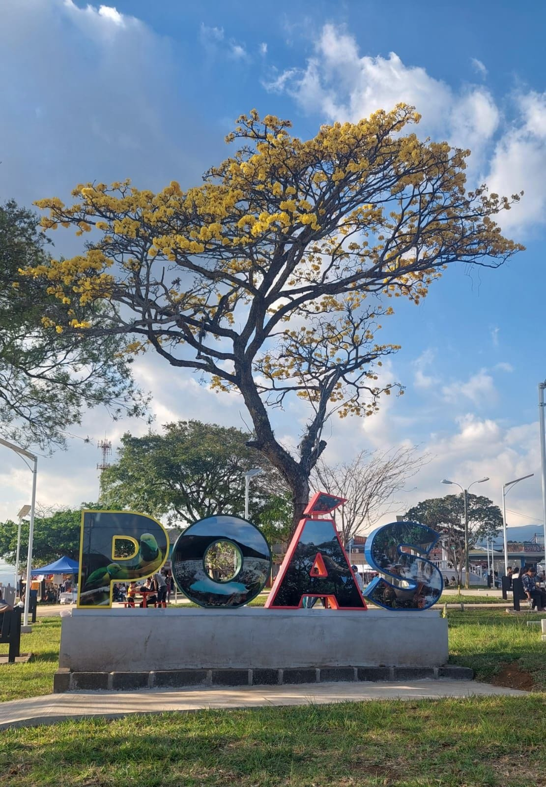
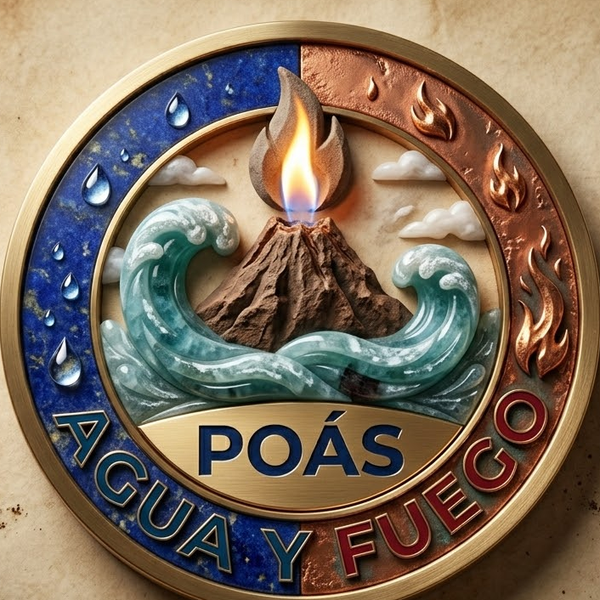

El Poás en Imágenes
Descubre la majestuosidad de nuestro coloso y sus alrededores.





Cráter Principal del Volcán Poás
La serenidad de la Laguna Botos
El macizo del Poás no solo es un gigante de fuego, es el pulmón húmedo de la región. El entorno de bosque nuboso actúa como una esponja gigante, capturando la humedad y alimentando las reservas subterráneas.
Conectá con empleadores del cantón de Poás. Publicá tu plaza o encontrá trabajo cerca de vos.
Actividades culturales, deportivas y comunitarias en Poás. Agregá y consultá eventos fácilmente.
Negocios y servicios del cantón de Poás. Restaurantes, hospedaje, tours, tiendas y más.
Consulta la zonificación, normas de desarrollo, protección ambiental y gestión del riesgo volcánico del cantón de Poás.
Descubre la majestuosidad de nuestro coloso y sus alrededores.

2,708 m.s.n.m. · Alajuela, Costa Rica
Denuncie problemas, irregularidades o situaciones que afecten a nuestra comunidad. Su voz importa.
Síguenos en redes sociales o escríbenos directamente por WhatsApp.